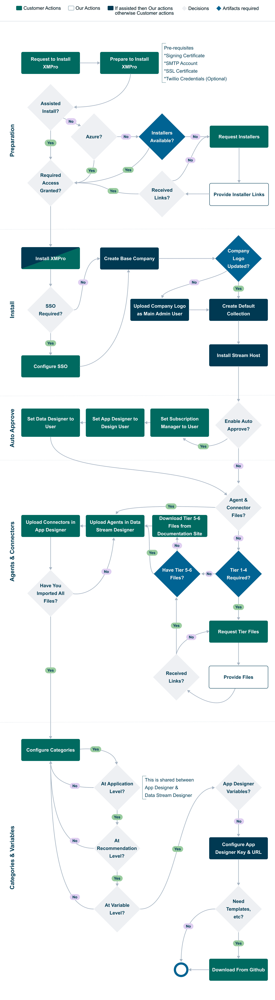

Overview
XMPro Platform consists of three main components - App Designer, Data Stream Designer, and Subscription Manager - deployed using a modern container-based architecture (v4.5+) that supports Azure, AWS, and on-premises environments.
This container-based approach provides:
- Improved Scalability: Easy horizontal scaling of components
- Better Resource Utilization: Optimized container sizing for each component
- Simplified Updates: Streamlined deployment and update process
- Enhanced Security: Container isolation and security boundaries
- Cost Optimization: Pay only for resources you use
Note
For v4.4 deployments, see the ARM template documentation. The Terraform deployment covers XMPro v4.5 and later, featuring the new separate App Service Plans per product architecture.
The complete process - encompassing preparation, installation, setup, and loading templates - is depicted in the flowchart below.

Artifacts
- Request Installers
- Request Tiers 1 - 4
- Download and install Tier 5 & 6 Files
- Links for the larger AI & ML Agents are on their individual documentation pages, as indicated here.
- Download Blueprints, Accelerators & Patterns
Last modified: November 06, 2025